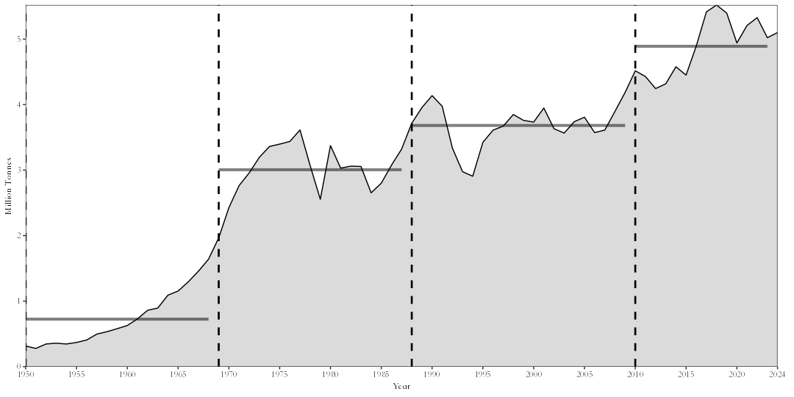
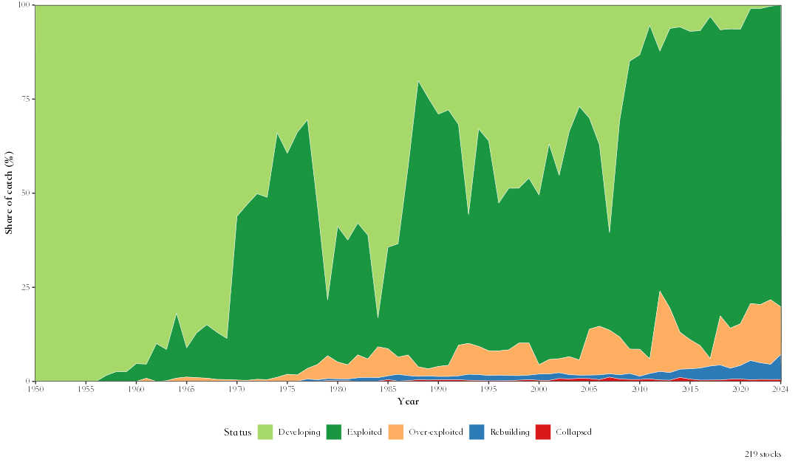
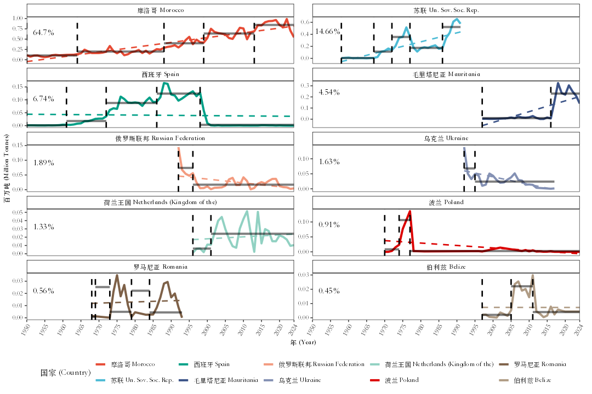
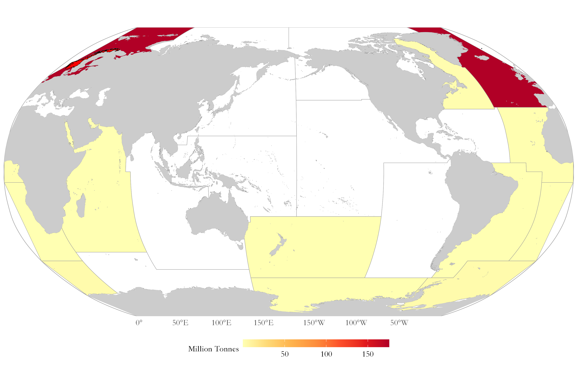
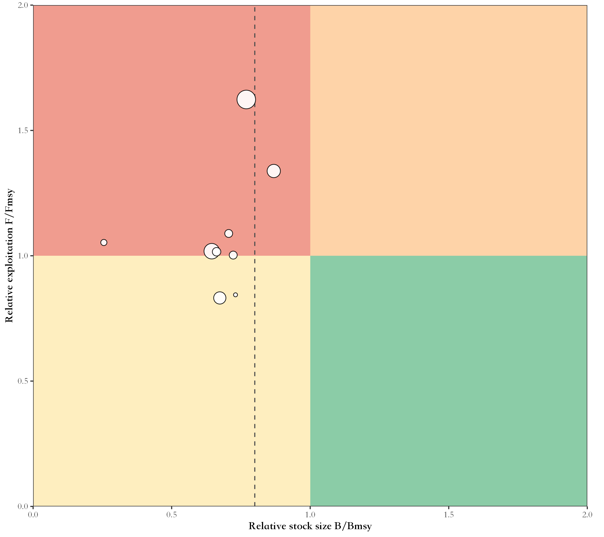
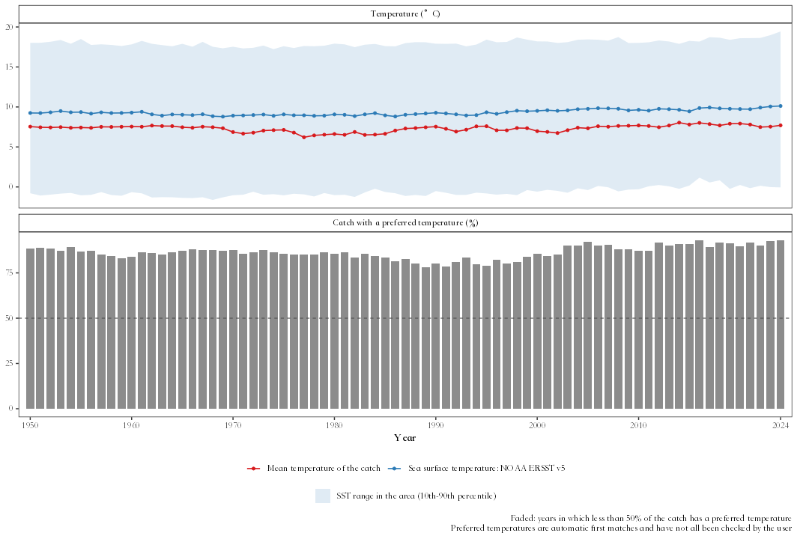

faofishingreport 把 FAO 全球捕捞产量统计（Global Capture Production）按渔区、国家和物种整理成报告用的图表、地图和表格，图表可以是中文、英文或中英双语。
✨ 主要功能
- 💾 随时用上最新数据：一行命令检查并下载 FAO 发布的新版本数据，并可比较两个版本之间的修订。
- 🌊 渔区分析：总产量与突变点、占全球海洋捕捞产量的比例、主要物种、主要捕捞国家、世界地图。
- 🐟 物种与国家：某个物种由哪些国家捕捞，某个国家捕什么、在哪里捕，以及其远洋船队的作业范围。
- 📊 汇总分析：物种类群结构、资源开发状态图、峰值与趋势、数据质量、多样性与集中度、按国家分组、突变点同步性、沿岸国与远洋捕捞、中上层与底层渔获比，以及全部海洋渔区对比。
- 🔬 文献方法分析：渔获骤变（Cottrell 等 2019；Gephart 等 2017）、渔业崩溃（Mullon 等 2005；Worm 等 2006，附随机序列对照）、渔获同步性与组合效应（Loreau 和 de Mazancourt 2008）。
- 🌡️ FishBase 与海温：FAO 物种与 FishBase、SeaLifeBase 物种特征的匹配（数据来自 rfishbase 项目发布的数据表副本），FAO 渔区的海表温度，以及渔获平均温度（Cheung 等 2013）。
- 📉 CMSY++ 资源评估：对主要物种进行仅基于渔获量的资源评估（Froese 等 2023；采用其作者发布的代码 https://github.com/SISTA16/cmsyPlusPlus，原样内置），自动为本机配置 JAGS，输出图表、预测以及生物学参考点和先验参数表。
- 📝 一键生成评估报告：
fao_report()生成中文或英文报告，可输出Word、LaTeX或PDF（封面、摘要、数据来源与分析方法、结果、结论、参考文献和附件），每项分析都可以单独开关，各函数的设置用前缀传入。 - 🌐 中文、英文或中英双语图表，国家、物种、渔区名使用 FAO 官方中文名。
- 🎨
自定义风格：主题、色板、地图投影（Robinson、Mollweide、Equal
Earth 等）和太平洋居中地图，用
fao_settings()设置一次即可。 - 💻 Windows、macOS、Linux 通用：自动选用系统里的中文字体，导出的表格用 Excel 打开中文不乱码。
📦 安装
需要 R 4.2 或以上版本，从 GitHub 安装：
install.packages("remotes")
remotes::install_github("Linbojun99/faofishingreport", dependencies = TRUE)用到的所有 R 包（Word 报告、PowerPoint、FishBase、海表温度、CMSY++
等）都会随本包一起安装。CMSY++ 还需要 JAGS 程序：运行一次
cmsy_setup() 即可。在 macOS 上输出可编辑的 PowerPoint
图表还需要安装 XQuartz。
🚀 快速上手
library(faofishingreport)
fao_settings(lang = "zh") # 所有图表使用中文
# 获取 FAO 最新数据（FAO 发布新版本时运行一次即可）
check_fao_update()
download_fao_data()
# FAO 34 渔区：中东大西洋
FAO34 <- fishing_area_data("Atlantic, Eastern Central")
fishing_area_species(FAO34$area_data, rank_range = c(1, 10))
fishing_area_country(FAO34$area_data, rank_range = c(1, 10))
# 沙丁鱼由哪些国家捕捞；摩洛哥主要捕什么
species_country(FAO34$area_data, "European pilchard(=Sardine)")
country_species(FAO34$area_data, "Morocco")
# 汇总分析与文献方法分析
stock_status(FAO34$area_data)
catch_shocks(FAO34$area_data)
mean_temperature_catch(FAO34$area_data, version = "builtin")
# 前 10 个主要物种的 CMSY++ 评估（先运行一次 cmsy_setup()）
cmsy_area("Atlantic, Eastern Central", top = 10)
# 一键生成中文评估报告，包含 CMSY++ 和渔获骤变，输出 Word 和 PDF（LaTeX）
report <- fao_report(34, lang = "zh", cmsy = TRUE, shocks = TRUE, format = c("docx", "pdf"))图表保存在工作目录的
figures/png/（需要时也可以同时输出可编辑的 PowerPoint 到
figures/pptx/），表格保存在 tables/。
🖼️ 示例
| 总产量与突变点 | 资源状态图 |
|---|---|
 |
 |
| 中英双语图表 | Robinson 投影、太平洋居中 |
 |
 |
| 前 10 个主要物种的 CMSY++ Kobe 图 | 渔获平均温度与海表温度 |
 |
 |
🔧 函数一览
💾 FAO 数据
| 函数 | 用途 |
|---|---|
check_fao_update() |
对比 FAO 线上最新版本与本机数据 |
download_fao_data() |
下载某个版本并转换成本包的数据格式 |
load_fao_data() |
读取最新的数据（下载的或包自带的） |
fao_data_info() |
所用 FAO 数据的版本、下载链接和引用格式 |
fao_data_dir() |
下载数据的保存目录 |
🌊 渔区分析
| 函数 | 用途 |
|---|---|
fishing_area_data() |
某个 FAO 渔区的产量：趋势、突变点、占全球海洋捕捞产量的比例、地图 |
fishing_area_species() |
渔区内的主要物种及其产量变化和突变点 |
fishing_area_country() |
渔区内的主要捕捞国家及其产量变化和突变点 |
🐟 物种与国家
| 函数 | 用途 |
|---|---|
species_country() |
某个物种的主要捕捞国家：排名、趋势、地图、各年代饼图 |
country_species() |
某个国家在渔区内的主要捕捞物种 |
country_analysis() |
某个国家在全部 FAO 渔区的捕捞，按物种和渔区拆分，附渔区地图 |
📊 汇总分析
| 函数 | 用途 |
|---|---|
species_group_composition() |
按 ISSCAAP 物种类群或大类的产量结构 |
stock_status() |
资源状态图：开发中、充分开发、过度开发、崩溃、恢复中 |
peak_trend() |
物种、国家或渔区的峰值年份、当前占峰值比例和近期趋势 |
area_overview() |
全部 FAO 海洋渔区对比 |
data_quality() |
官方数据与估算值的比例，鉴定到种的产量比例 |
diversity_concentration() |
物种数、国家数、香农多样性指数、HHI、前 N 名占比 |
country_group_summary() |
按收入分组、大洲或地区汇总产量 |
regime_shift() |
主要物种的突变点，以及多个物种同时突变的年份 |
coastal_distant() |
沿岸国与远洋捕捞国的产量 |
🔬 文献方法分析
| 函数 | 用途 |
|---|---|
catch_shocks() |
渔获骤变（Cottrell 等 2019 或 Gephart 等 2017），按年份和类别统计 |
collapse_analysis() |
渔业崩溃（Mullon 等 2005 或 Worm 等 2006），与随机序列对照 |
catch_synchrony() |
物种或国家渔获量的同步性与组合效应 |
distant_water_profile() |
某个国家在邻近渔区和远洋渔区的渔获量变化 |
compare_releases() |
两个 FAO 数据版本之间修订、新增和删除的记录 |
pelagic_demersal() |
中上层与底层渔获比（Caddy 1993；de Leiva Moreno 等 2000） |
fao_pd_groups() |
计为中上层或底层的 ISSCAAP 类群 |
🌡️ FishBase 与温度
| 函数 | 用途 |
|---|---|
check_fishbase_update() |
FishBase 和 SeaLifeBase 的最新版本及本机已下载的版本 |
download_fishbase_data() |
下载 FishBase 和 SeaLifeBase 数据表 |
fishbase_table() |
读取 FishBase 或 SeaLifeBase 数据表 |
fishbase_match() |
将 FAO 物种条目与 FishBase、SeaLifeBase 匹配，并给出物种特征 |
fishbase_sources() |
物种特征的来源、许可证和匹配规则 |
fao_sst_products() |
海表温度数据产品及其参考文献 |
download_sst_data() |
下载海表温度数据 |
fao_area_sst() |
各 FAO 渔区的逐年海表温度 |
mean_temperature_catch() |
渔获平均温度及其趋势，并与海表温度比较 |
📉 CMSY++ 资源评估
| 函数 | 用途 |
|---|---|
cmsy_area() |
一次完成某个渔区主要物种的 CMSY++ 评估 |
cmsy_system() |
检查本机的 R、JAGS 和 CMSY++ 所需的包 |
cmsy_setup() |
安装 JAGS 和 CMSY++ 所需的 R 包 |
cmsy_jags_versions() |
各 R 版本对应的 JAGS 和 rjags 版本 |
cmsy_download_jags() |
下载适合本机的 JAGS 安装程序 |
cmsy_install_jags() |
安装 JAGS |
cmsy_sources() |
CMSY++ 所用各部分的版本、链接和引用格式 |
cmsy_priors() |
来自 FishBase 和 SeaLifeBase 的 r 先验 |
cmsy_input() |
将 FAO 渔获数据转换为 CMSY++ 输入文件 |
cmsy_defaults() |
CMSY++ 设置及其默认值 |
cmsy_run() |
运行 CMSY++ |
cmsy_plot() |
CMSY++ 结果图表 |
cmsy_forecast() |
不同捕捞情景下的预测 |
cmsy_compare() |
比较多次 CMSY++ 运行结果 |
cmsy_tables() |
报告用的先验参数表和结果表 |
📝 报告
| 函数 | 用途 |
|---|---|
fao_report() |
一键生成某个渔区的中文或英文评估报告（Word、LaTeX、PDF），每项分析都可以单独开关 |
🎨 设置与语言
| 函数 | 用途 |
|---|---|
fao_settings() |
语言、主题、色板、地图投影和中心经度、网格线、输出设置 |
fao_font() |
图表字体 |
fao_translate() |
国家、物种、渔区的中文或中英双语名称 |
📖 文档
- 🚀 快速入门
- 🎓 教程：东北太平洋（FAO 67区）从零到报告
- 💾 FAO 数据：下载与自定义
- 🌊 渔区分析
- 🐟 物种与国家分析
- 📈 类群结构、资源状态与趋势
- 🔍 数据质量、多样性与船队
- 🔬 渔获骤变、渔业崩溃、同步性与远洋捕捞
- 🌡️ 海表温度与渔获平均温度
- 🐠 FishBase 与 SeaLifeBase 物种特征
- 📉 CMSY++ 资源评估
- 📝 一键生成评估报告（Word、LaTeX、PDF）
- 🧩 扩展（不纳入Word报告）：🚢 贸易与就业
- 🎨 自定义图表与地图
每篇文档最后都列出了所用方法和数据的参考文献及其 DOI 或网址。每个函数的参数说明见函数参考（英文）。
📊 数据来源
本包自带 FAO 全球捕捞产量（Global Capture Production）统计 2026.1.0 版（FAO 于 2026 年 3 月 30 日发布，包含 1950–2024 年的产量），于 2026 年 10 月 10 日下载自 https://www.fao.org/fishery/static/Data/Capture_2026.1.0.zip。
- 全部版本：https://www.fao.org/fishery/static/Data/，用
check_fao_update()和download_fao_data()查找并下载新版本。 - 物种名称：FAO ASFIS 物种名录；国家、物种、渔区的中文名来自该版本数据附带的 FAO 代码表。
- 许可证：CC BY 4.0，并遵守 FAO 数据库使用条款。
-
fao_data_info()显示你的分析所用的版本及引用格式。 - FAO网站：FAO、FAOSTAT数据和FAO渔业数据文件。
本包与FAO无关联，数据来源为FAO。
📝 引用
citation("faofishingreport")使用结果发表时，请同时引用 FAO 数据，例如
fao_data_info() 给出的格式：
FAO. 2026. Global Capture Production 1950-2024, release 2026.1.0. In: Fisheries and Aquaculture [online]. Rome. [Cited 10 October 2026]. https://www.fao.org/fishery/collection/capture/en. Licence: CC BY 4.0.